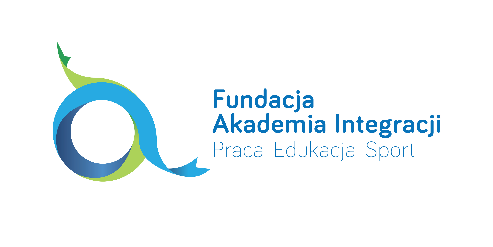

Fundacja została powołana do życia przez AMS S.A. i jest kontynuacją projektu „AMS dla Integracji”. Najkrócej rzecz ujmując, skupiamy się na szeroko pojętych problemach i zagadnieniach związanych z życiem, aktywnością i rolą społeczną osób niepełnosprawnych, ze szczególnym naciskiem na pracę, edukację i sport.Pomysłodawcami i pracownikami Fundacji są szermierze na wózkach, wybitni sportowcy, paraolimpijczycy, wielokrotni medaliści Mistrzostw Świata i Europy, którzy wraz z innymi pracownikami AMS realizują idee Fundacji na zasadach wolontariatu.
W ramach naszej działalności edukacyjnej z sukcesem prowadzimy m.in. pokazy w szkołach podstawowych i ponadpodstawowych. Podczas prezentacji dzieci i młodzież mają okazję poznać szermierkę na wózkach i samodzielnie zawalczyć z najlepszymi zawodnikami w Polsce – członkami kadry narodowej, wielokrotnymi medalistami paraolimpijskimi, Mistrzami Świata i Europy.
Podczas spotkań dzieci dowiadują się, jak eliminować niebezpieczne sytuacje ze swojego życia i jak im zapobiegać. Zmieniają sposób postrzegania niepełnosprawnych – poznają je jako osoby ambitne i samodzielne, osiągające wybitne osiągnięcia, po prostu jako zwykłych-niezwykłych ludzi z marzeniami, sukcesami i pasjami. Są to lekcje tolerancji, integracji, nauki o drugim człowieku, w którym łączymy teorię z praktyką. Program AMS dla Integracji był wielokrotnie nagradzany, m.in. nagrodą Media Trendy 2012 w kategorii marketing społeczny/CSR, a AMS – nagrodą Lodołamacze. Powołanie Fundacji otwiera nowy rozdział naszej działalności społecznej